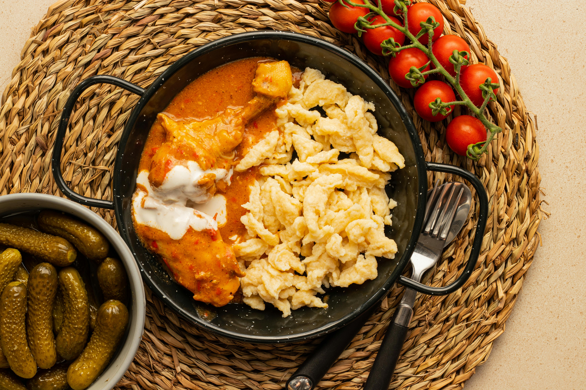

Bograch
Home

Description
I've tried this Hungarian dish back when I was a teenager in a summer camp in Carpathian mountains. It's delicious!
Think of it sort of goulash and soup, red in colour and a bit spicy in taste.
Ingredients:
- 1 kg beef chuck
-
Seasoning
- 1 3/4 tsp cooking salt
- 1 tsp black pepper
- 1/4 cup Hungarian-style paprika (sweet paprika is good substitute)
- 1 bay leaf
- 1 tsp caraway seeds
-
Vegetables
- 2 brown onions
- 5 garlic cloves
- 2 bell peppers
- 2 tomatoes
- 2 carrots
- 2 potatoes
- 1 litre beef stock